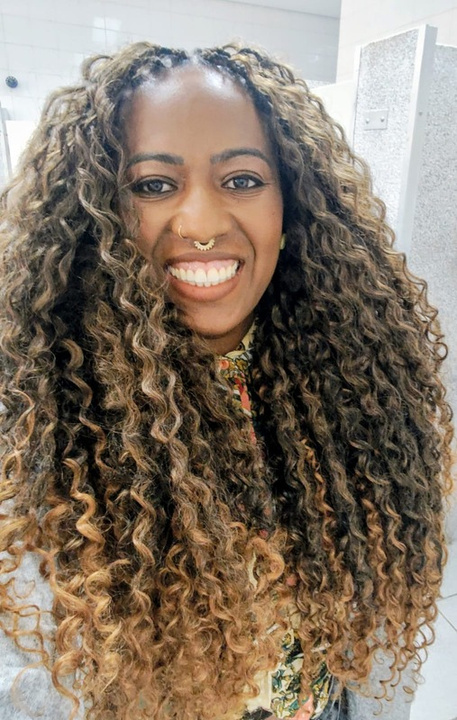
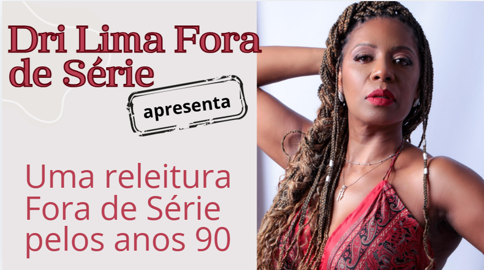
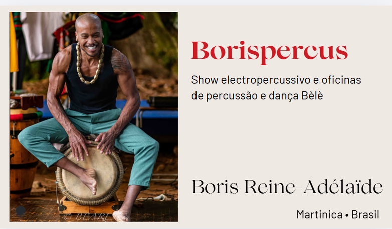
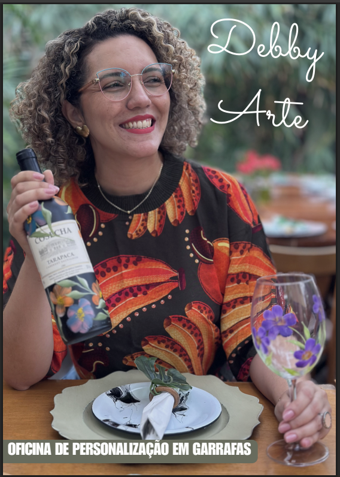
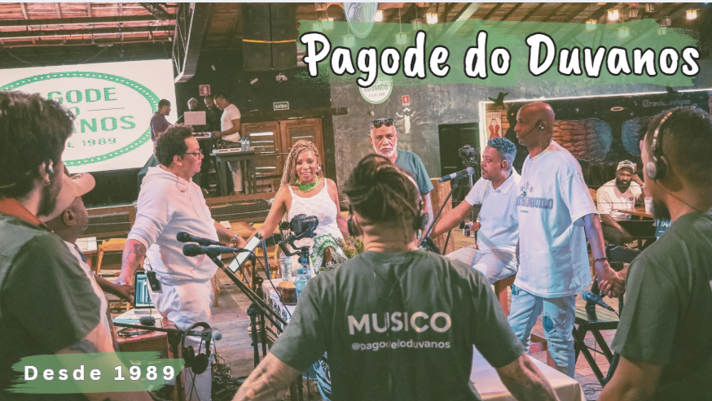

Projetos & Editais
- Pesquisa de oportunidades para seu trabalho;
- Escrita, revisão e adaptação de projetos;
- Elaboração de orçamento e cronograma;
- Organização de documentos, inscrição e acompanhamento.
PROJETOS · EDITAIS · CIRCULAÇÃO
Produção artística e cultural com presença, escuta e responsabilidade.
Conheça a Adinkra ↓
Ariene Dupin · Artista e pesquisadoraADINKRA PRODUÇÕES ARTÍSTICAS
Sou Ariene Dupin, produtora artística e cultural, artista e pesquisadora. À frente da Adinkra Produções Artísticas, ajudo artistas e coletivos a organizar suas trajetórias, desenvolver projetos e apresentar seus trabalhos a editais e espaços culturais.
Sou doutoranda em Artes visuais pela USP, mestra em Arte - educação e formada em Música e Pedagogia. Minha atuação reúne criação, educação e produção cultural, com escuta, afeto e compromisso com cada projeto.
Os símbolos Adinkra expressam valores, conhecimentos e filosofias dos povos Akan, da África Ocidental. Inspirada nessa relação entre imagem e significado, a Adinkra Produções Artísticas desenvolve seu trabalho com presença, escuta e responsabilidade.
O QUE EU FAÇO?
✳ Serviços avulsos, conforme a necessidade de cada artista ou coletivo.
TRANSPARÊNCIA EM CADA ETAPA
Estruturo sua ideia em um texto com apresentação, objetivos e atividades.
R$ 200,00Preencho e envio a inscrição com as informações e os materiais fornecidos.
R$ 100,00Ajusto um projeto que você já tem aos campos e às exigências do edital.
R$ 150,00Escrita do projeto, orçamento, cronograma e envio da inscrição.
R$ 450,00Estruturo a proposta, as metas, o cronograma e o orçamento conforme as exigências do mecanismo de incentivo.
R$ 600,00Crio um PDF que apresenta sua trajetória e seus principais trabalhos, reunindo textos, fotos, registros de apresentações e links para vídeos ou publicações.
R$ 300,00Reviso os textos e atualizo o portfólio que você já tem com novos trabalhos, fotos, registros e links.
R$ 100,00Escrevo um texto de apresentação do seu trabalho ou da sua trajetória.
R$ 80,00Organizo os preparativos de uma atividade já definida. Alinho com artistas, equipe e espaço os horários, os materiais e as necessidades técnicas para a realização.
R$ 200,00Com base nos seus materiais, preparo a apresentação do espetáculo ou da oficina para envio a espaços culturais, com descrição, duração, público e necessidades técnicas.
R$ 200,00Busco oportunidades, apresento seu trabalho a espaços culturais e acompanho os retornos. Quando há interesse, negocio datas, cachês e condições com você.
Comissão a combinar Sobre o cachê artísticoOs serviços podem ser contratados de forma avulsa, conforme a necessidade de cada artista ou coletivo.
PORTFÓLIO
Alguns trabalhos realizados em parceria com artistas e coletivos. Cada projeto é construído a partir de sua identidade e trajetória.

Organização do material de apresentação do espetáculo e elaboração dos textos para a proposta artística.
Ver apresentação ↗
Criação do portfólio em português e tradução para o francês.
Ver em português ↗
Criação da apresentação: Cores que aproximam, proposta de oficina de pintura em taças da artista plástica.
Ver proposta ↗
Criação do portfólio do grupo, reunindo a trajetória dos músicos e os registros das apresentações.
Ver portfólio ↗As imagens acima são registros visuais dos materiais apresentados no portfólio institucional.
05 / VAMOS CONVERSAR?
Me conte o que você está preparando e em que etapa precisa de ajuda.
Combinamos o serviço, o valor e o prazo antes de começar.
Me chame no WhatsApp ou me envie um e-mail. ♥